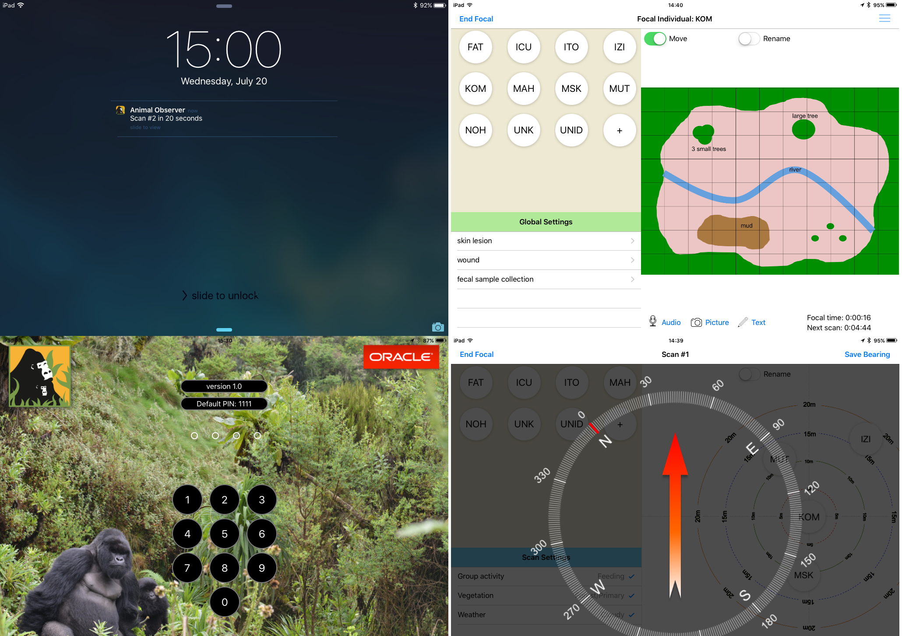

Current Features of Animal Observer
User-Specific Pin Codes: If several users share the same device, each user can have an individual pin code. Pin codes can be any four digit number.
GPS Feature: If GPS is turned on, the app will record a GPS coordinate (lat., long., alt., precision) each time a new behavior is recorded, each time a scan is recorded and each time a text comment is entered. Not all iPads are GPS enabled, and if you use the app in the field, we recommend pairing these iPads with a bluetooth GPS. Several models exist, and Fossey Fund currently uses the Garmin GLO which works well (although it's not waterproof). The GPS however is not necessary for Animal Observer to function.
Use Compass Feature: If you turn this feature on, you will be able to enter the compass bearing of the focal individual at the end of each scan. Combined with the GPS data, this feature can be used to calculate the lat/long coordinates of all the individuals you are observing. This type of data can then be used to study individual movement patterns (who is at the front of the group, who walks behind...etc). It cannot be used if Map Mode is activated.
Map Mode: In this mode, the typical background (target with circles at varying distances) is replaced by an image in .png or .jpg format. If this image is a map of a small study area (e.g., forest clearing visited by gorillas, enclosure in a sanctuary or a zoo), you will be able to use your scan data to look at which areas of your map are used most or least frequently by your study individuals or groups. The map’s default units are meters, but this is customizable. The focal individual is not at the center of this scene, and Map Mode cannot be used if Use Compass is activated.
Global Settings: Feature that allows you to enter data that does not fit anywhere else, and data that acts as a modifier to the observation. Weather and health are examples. There is no study individual that is linked to this data.
Multimedia Comments: At the bottom of the scene, three buttons allow recording videos, photos, voice or written comments. All three are time stamped, and when written comments are saved, the GPS coordinate is also recorded.
Screen Off Options: If you wish to conserve power and turn your screen off in between scans, the app will send an alert when the scan time is approaching. The alert is timed for 20 seconds in advance and there is an optional warning sound along with it. If you have a GPS enabled watch, the alert can appear on the watch as well.
Data Upload/Download: Can send data to or from another device, either wirelessly or through a cable connection. Data is uploaded in .dat format. This feature also has a “Delete All Behavior Data” button which will wipe the device clean of any saved behavioral data.